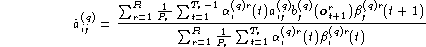
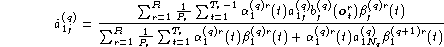
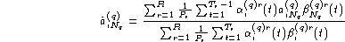
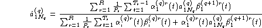
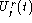
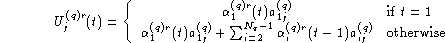

The re-estimation formulae for the embedded model case have to be modified to take account of the fact that the entry states can be occupied at any time as a result of transitions out of the previous model. The basic formulae for the re-estimation of the transition probabilities is

The transitions from the non-emitting entry states into the HMM are re-estimated by

and the transitions out of the HMM into the non-emitting exit states are re-estimated by

Finally, the direct transitions from non-emitting entry to non-emitting exit states are re-estimated by

The re-estimation formulae for the output distributions are the same as for the single model case except for the obvious additional subscript for q. However, the probability calculations must now allow for transitions from the entry states by changing  in equation 8.1 to
